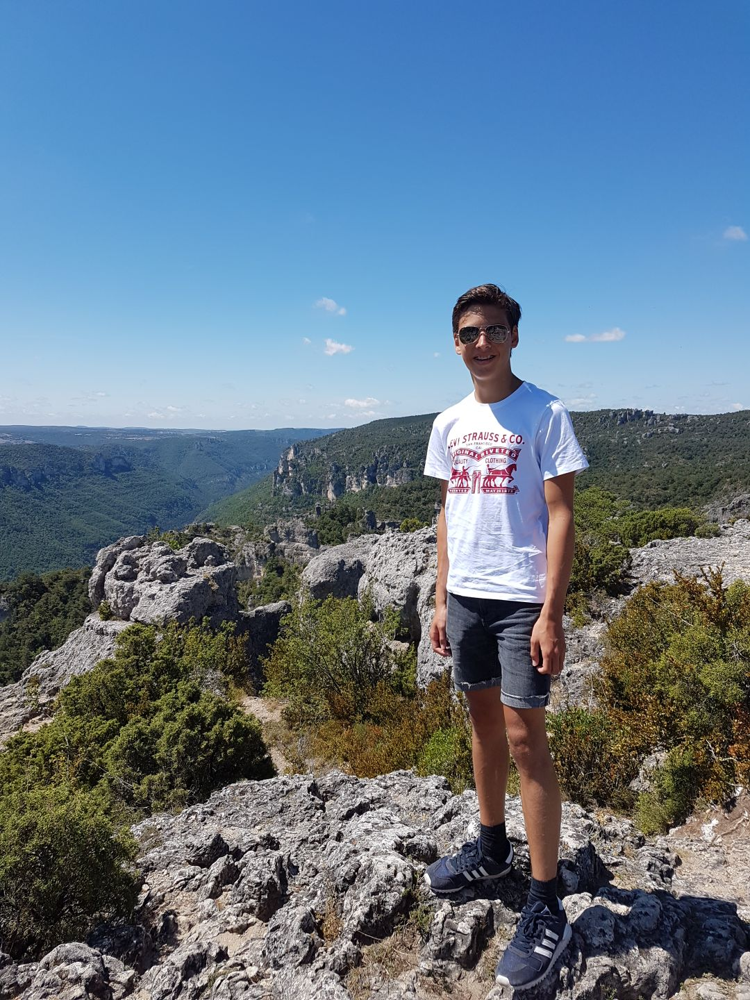

Wie is Mats Verlinden
Mats Verlinden is een rustig, maar gezellig persoon. In mijn vrije tijd kijk ik veel films en series op netflix of ik ga gamen met mijn vrienden.
Sport
Op vrijdag avond heb ik meestal training van korfbal en zaterdag middag een wedstrijd. Ik zit nu een aantal maanden op korfbal maar daarvoor had ik al een keer erop gezeten maar toen was ik er even af gegaan omdat al me vrienden in een ander team zaten dus vond ik het niet meer leuk. Voordat ik korfbal ging doen deed ik nog tennis dat heb ik al sinds jong af aan gedaan. Na ongeveer 7 jaar ben eraf gegaan omdat ik het minder leuk vond worden. Ook heb ik nog een jaartje judo gedaan maar daar ging ik al snel weer van af.
Werk/School
Midden 2017 ben ik geslaagd voor mijn examen voor de MAVO. Ik was 15 jaar, geen 1 keer blijven zitten. Nu doe ik de opleiding Applicatie ontwikkelaar op het Da Vinci College in Dordrecht. Het is een MBO opleiding waar we websites moeten maken en leren programmeren. Vanaf het 2de gaan we ook op stage bij een bedrijf. Later hoop ik dat ik een leuke goeie baan kan krijgen bij een goed bedrijf. Momenteel werk ik bij de Dirk van den Broek in Alblasserdam als vakkenvuller.